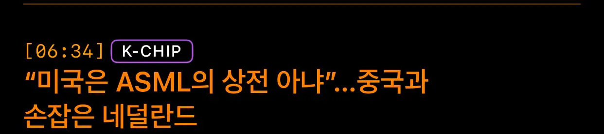
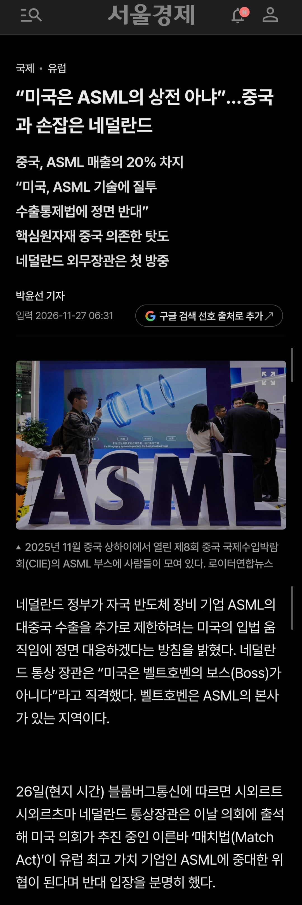

말도안돼.. 미국이 가만있을리가
만약 진짜로 중국에 euv 팔면 우리나라 걍 개쳐망하는거임
미국성님들 이건 진짜로 막아주셔야만 해요..
https://m.sedaily.com/article/20119619


말도안돼.. 미국이 가만있을리가
만약 진짜로 중국에 euv 팔면 우리나라 걍 개쳐망하는거임
미국성님들 이건 진짜로 막아주셔야만 해요..
https://m.sedaily.com/article/20119619
오홍 euv화학소재 우리회사꺼 쓰면 상여금 달달하겠더
ㅋㅋ...
잘생각해야됨
디윱 파츠랑 온콜까지 틀어막으면 중국한테는 존나 크리티컬한건 맞는데 asml 비롯 대다수 글로벌 장비 소재사들 지난 3~4개년 매출에 아시아지역 20~40퍼는 대중국 매출이다..
장비 팔고도 보증기간동안 파츠랑 서비스 매출이 전체 매출 20~25퍼는 나옴
이미 대중국향 상무부 제재로 선단 매출은 막혔는데 차선단까지 막아서 매출 상당수가 삭제되면.. 그만치 보전은 타사로 빠지는 선단제품에 당연히 얹어서 존나 비싸지는거임
노광기 도즈마다 단가 더 오르면 걍 우리들 쓰는 칩값은 당연히 안오를수가없다
대중국 매출빠진만큼 미국 한국 대만 일본이 더 비싸게 많이 사준다는 보장은 대체 어딨음
고순도 석영이랑 실리콘이 미국에서만 나온다며 이것도 막아버리면